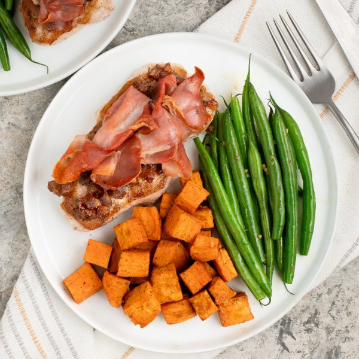

Pork Chop with Spiced Dates, Prosciutto, Green Beans & Sweet Potato

Total Time
35 min
Nutrition (per serving)
647.4 kcalCalories
42 gProtein
43 gCarbs
36.4 gFat
Full nutrition table
| Calories | 647.4 kcal |
| Total fat | 36.4 g |
| Saturated fat | 9.9 g |
| Trans fat | 0.1 g |
| Cholesterol | 105.4 mg |
| Sodium | 710.3 mg |
| Carbohydrates | 43 g |
| Fiber | 7.8 g |
| Sugars | 17.8 g |
| Protein | 42 g |
| Potassium | 1223.7 mg |
| Calcium | 106.6 mg |
| Iron | 3.3 mg |
| Vitamin A | 16917.9 IU |
| Vitamin C | 17.5 mg |
| Vitamin D | 16 IU |
Cookware
Ingredients
- 4 clovesgarlic
- 1 lbgreen beans
- ¼ cupmedjool dates, pitted
- 4pork chops, boneless
- 8 slicesprosciutto
- 1 lbsweet potato
- black pepper
- cinnamon, ground
- extra virgin olive oil
- salt
Steps
- Preheat oven to 425°F.
- Wash and dry sweet potatoes, then peel and large dice; place on a large baking sheet pan, drizzle with oil, and season with spices. Toss to combine and spread out in an even layer on one half of the baking sheet.1 lb sweet potato
2 tsp extra virgin olive oil
½ tsp salt
½ tsp black pepper
¼ tsp cinnamon, ground - Place baking sheet in the oven (it doesn't have to be fully heated) and roast until sweet potatoes start to soften, about 10 minutes.
- Meanwhile, peel and mince garlic; mince dates. Place both in a small bowl along with oil and spices; stir to combine the date topping and set aside.2 cloves garlic
¼ cup medjool dates, pitted
2 tsp extra virgin olive oil
½ tsp cinnamon, ground
½ tsp salt
¼ tsp black pepper - Preheat a large skillet over medium-high heat.
- While the skillet heats up, pat the pork chops dry with paper towels and place on a plate; season with salt and pepper on both sides.4 pork chops, boneless
½ tsp salt
½ tsp black pepper - Once the skillet is hot, add oil and swirl to coat the bottom; add chops and cook until golden, about 2 minutes per side. Once golden, transfer to a clean plate (the pork will not be cooked all the way through). Reserve skillet with juices for later use.4 tsp extra virgin olive oil
- Divide date topping between chops and layer each with two slices of prosciutto.8 slices prosciutto
- Remove sweet potatoes from the oven and toss; add layered pork chops to the other half of the baking sheet. Return baking sheet to the oven and roast until sweet potatoes are tender and chops are cooked through, 8-10 minutes more. Remove from oven.
- Meanwhile, wash, dry, and trim green beans.1 lb green beans
- Peel and mince additional garlic.2 cloves garlic
- Return the skillet to medium-high heat, add more oil, and swirl to coat the bottom; add beans and salt. Stir-fry until lightly charred and fork-tender, 3-4 minutes. Add garlic and continue to cook, stirring constantly, until fragrant, about 30 seconds; remove from heat.4 tsp extra virgin olive oil
½ tsp salt - To serve, divide layered pork chops, sweet potatoes, and green beans between plates. Enjoy!